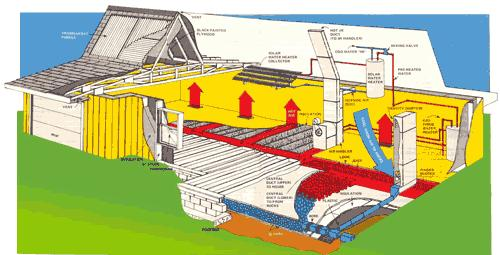
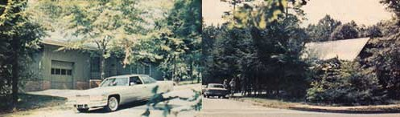

The Helio Thermics Solar-Heated And -Cooled House
November/December 1976
IS THIS THE WORLD'S FIRST COMPETITIVELY PRICED SOLAR-HEATED AND -COOLED HOME THAT QUALIFIES FOR FEDERAL HOUSING AUTHORITY AND VETERANS ADMINISTRATION BACKED FINANCING?
Until just a few weeks ago anyone who wanted to live in a solar-heated and -cooled house found the construction of that dwelling to be pretty much a do-it-yourself affair. (There simply weren't any "ready-made" sun-powered homes on the market.)
And who could really afford the expensive construction of a custom, one-of-a-kind solar-tempered building anyway? For that matter, who (other than the local banker's favorite grandchild) could even obtain financing for such a "crazy" idea? Who indeed?
COMES THE DAWN!
Some folks down in Greenville, South Carolina (folks who go by the name of Helio Thermics, Inc.)-however-have now changed all that. They've changed it by designing, building, and making readily available [1] a "standard" solar-heated and -cooled dwelling that [2] is very competitively priced and [3] is among the very first-possibly the first-such structures to qualify for both FHA and VA mortgage insurance.
As impressive as the name (Helio Thermics, Inc.) may sound, this threefold "breakthrough" in the use of solar energy wasn't made by any overstaffed and over-financed foundation, government agency, or corporation. Helio Thermics is actually little more than three brothers . . . Randy, Mike, and Larry Granger. Three brothers who-in their backyard, so to speak-studied some U.S. Department of Agriculture research data (which is freely available to anyone) and then-based on that information-designed, built, and refined an exceptionally clever solar-heating and -cooling system.
FIRST THINGS FIRST
One of the most impressive things about the Granger brothers is that, unlike far too many experimenters in the field, they didn't try to design their sun-powered system "wrong end to". That is, they did not become so embroiled in the usual "my collector is more efficient than your collector and my method of heat transfer is better than yours" competition that they wound up-as other experimenters have-"proving" themselves "right" with a funny looking, lopsided, uncomfortable house that cost two or three hundred thousand dollars.
Instead, they "began at the beginning" by concentrating on the more prosaic (although, in some ways, far more important) components of their system. Things like studding and insulation.
The exterior walls of the prototype Helio house-which has been in operation since February of 1976-are all framed with 2 X 6's instead of the customary 2 X 4's. This makes it possible for those walls to contain batts of fiberglass insulation that are a full five and one-half inches thick, rather than the "standard" three and a half inches used in most contemporary structures. And the ceiling of the building is insulated with a thick 12 inches of the fiberglass . . . which is twice the six inches recommended as "heavy" insulation for the Greenville, South Carolina area by many authorities on the subject.
This "extra" insulation, plus the fact that every window in the Helio Thermics house is glazed with thermopanes (double layers of glass), makes the building extremely easy to heat in the winter and to cool during the summer. Or-to put it another way-by spending a little more to insulate their structure in the beginning (by putting "first things first"), the Granger brothers were able to drastically reduce the size, complexity, and cost of everything that followed.
THE COLLECTOR
The economies of Randy, Mike, and Larry's approach to the construction of a sun-warmed and -cooled house are perhaps most obvious when you inspect what is usually one of the most expensive of all the components that go into such a system: the collector. The Grangers' building-in the strictest sense-doesn't even have one!
What the boys did was take something (the attic) that virtually all houses have anyway and, at very little additional qxpense, modified it into a "hot air solar absorber". This modification was actually quite simple.
Since the optimum angle for the placement of a solar collector is generally considered to be latitude plus 15 degrees, and since Greenville, South Carolina is located approximately 35 degrees north of the equator, the south-facing slope of the attic's roof was set at 50 degrees to the horizon. Translucent, reinforced, tedlar-coated, corrugated fiberglass sheeting ("Filon", the brand named panels used on some greenhouses) was then attached with weatherproof screws directly to the rafters on that side of the attic in place of standard roofing material.
This created 400 square feet of "collector" . . . at the rockbottom cost of only about $2.50 per square foot! That's an exceptionally low figure, as anyone experienced in the construction of solar collectors will tell you. Especially low, in fact, since two layers of the Filon were fastened to the whole 400 square feet of collector surface.
The double thickness of corrugated translucent sheeting that covers the Helio home's "solar absorber" is cross-laminated both to add rigidity and to increase the insulating value of the Filon panels. The first layer of the sheets was laid horizontally on the attic's south face and then the topping layer was run vertically (to better shed rain, snow, and other moisture). The half-inch-thick plywood floor and opposite wall of the attic's interior were then painted flat black so the collection chamber would absorb the incoming rays of the sun more efficiently.
This was all done, quite obviously, to make the attic/collector a better heat trap during the winter. But what about those hot South Carolina summers? What keeps that double layer of translucent plastic and those absorber panels of black plywood from turning the attic into an unbearably hot solar oven during the months of July and August?
V-e-r-r-r-y simple. By opening a series of vents along the ridge of the attic's roof and immediately under its eaves, the Grangers have found they can create a surprisingly effective natural "air conditioner" for that part of the house. The more the air in the loft is heated, in other words, the faster it rises out the ridge vents and the more it draws cool air in through the openings under the eaves. Believe it or not, USDA tests have shown that this entirely natural flow of air can keep summer temperatures in the attic as much as 40 degrees Fahrenheit lower than the attic temperatures in "ordinary" homes located in the same neighborhood as the Helio Thermic dwelling.
So: By merely opening the vents along the ridge and eaves of the attic, that section of the Granger house can be naturally air conditioned during the summer. And by just as Simply closing those same vents, the modified attic can be converted into a very effective solar collector.
THE DELIVERY AND STORAGE SYSTEMS
Of course, if Randy and Mike and Larry had stopped right there, they wouldn't have had much of a solar-tempered house on their hands. Few people spend all their time up in the attic. Besides, taken just this far and no farther, there'd be no way to store the attic/collector's excess warmth or cold during any given period and then use it at a later time.
So the boys tucked 1,100 cubic feet (60 tons) of washed, egg-sized rock under the building. And they connected this "heat sink" to the attic with a network of ducts, dampers, and louvers so that-among other functions-a blower (the Grangers call it an "air handler") can draw air-either hot or cold-from the attic. And that air can be used to heat or cool either the building's main floor or the crushed stone in the storage pit underneath. And-if stored-the captured warmth (or coolth) can always be extracted from the storage area on demand and blown into the house's living space. by the 1,600-cubic-foot-per-minute fan (driven by a half-horse electric motor) that is the heart of the building's air handler.
THE LITTLE "BLACK BOX"
All very well and good. It's easy to see how the Helio Thermics house can capture hot air in its attic on a sunny winter day (or cold air on a cool August night) and then either blow that air into the structure's living quarters or down into its rock storage area for use at a later time. But it's also easy to see that the mere switching of vents and louvers and dampers could soon turn into a full-time job for someone.
("Let's see now. I'm collecting excess Btu's in the attic and the house is cold so I'll pump some heat from the attic to the living area. Whoops! Too much. Better switch a little down to the storage pit. Wait a minute! A cloud just went in front of the sun . . . shift all the warmth we can collect to the house again. Yes . . . NO! Too much. Maybe if we . . . on the other hand . . . WAIT A MINUTE!!!")
So the Grangers built a full-time "someone"-an electronic control unit-right into their house to continuously take care of this chore. The "solid state black box" is about as big and as complex as a small TV set and, just like most modern color TV's, has removable curcuit boards for easy service and repair. "Unlike the average `boob tube', however," say the Grangers, "our black box is designed to work darn near forever."
The control unit (actually a mini-computer) constantly monitors the temperature in five locations: [1] the Helio Thermic building's collector/attic, [2] the structure's living area, [3] the central portion of the rock storage pit, [4] the outer edges of the storage area, and [5] the atmosphere surrounding the house. With this continually updated information always "in mind", it then decides which heating or cooling source and what mode of operation (there are eight modes) will most economically keep the building's living space at the temperature set on the black box's console dial.
As it deems necessary, the control unit will [1] heat the house with Btu's drawn down from its attic or [2] stash those therms away in the storage pit below. Then again, it may decide [3] to pull some of that collected warmth back up out of crushed stone and distribute it to the structure's living area. It may even [4] tap into a very small supplemental source of heat to augment the solar collection and storage system during unusually long periods of overcast weather.
The control unit can also [5] cool the building with outside air or [6] cache some of that coolness in the storage bin. And it can [7] make the decision to draw collected cold air from the storage area under the house and blow it into the living space, or even [8] distribute the output of a regular air conditioner.
THE BACKUP HEATING SYSTEM
The Grangers are quick to admit that-just like most solar-heated structures-their Helio Thermic house can be temporarily "put out of business" by three or more solid mid-winter days of heavy cloud cover. Unlike a great number of other sun-warmed buildings, though, theirs is so well insulated that it can be supplementally heated with nothing but an ordinary 50-gallon, quick recovery, gas-fired domestic water heater!
The hot (140° F) water is pumped through a heat exchanger (something like an automobile radiator) within the Helio Thermic air handler. There, some of its thermal energy is transferred to the air passing around the heat exchanger's coils and the warmed air is then distributed throughout the house.
Interestingly enough, the water which returns from the exchanger is still hot enough (130°) to pipe right into the dwelling's plumbing for washing, bathing, and other household uses. And-at current natural gas prices in the Greenville area-a whole week (which would be, to say the least, highly unusual) of heating the entire Helio Thermic prototype with this backup source of warmth has been calculated to cost only $6.80.
And if that irregular and highly unusual expense bothers you, you should realize that the Granger boys are more than getting it back on a regular basis directly from their building's attic/collector. What they've done, you see, is paint some copper tubing black, lay it out on the attic's floor and then connect one end of the bed of piping to the bottom and the other end to the top of an electric water heater's tank (the unit's heating element has been removed). This very simple solar-powered heater can warm its water to a torrid 170° F and it supplies the Helio Thermic prototype with a large part of all the hot water its residents need.
THE BACKUP COOLING SYSTEM
Even though it was never actually necessary to supplementally cool the Helio Thermic house during its first summer, the Grangers did do a limited amount of experiments with the idea just to see how it would work.
"You can bolt a big air conditioner right into the building's ducting and use it to 'overpower' any uncomfortable heat in the house on a really hot day if you want to," says Mike. "We think it's a lot smarter and less costly, though, to u se a much smaller conditioner and just run it on the few nights when the outside air temperature doesn't drop enough to cool the rocks in the structure's storage bin. On such nights, the small conditioner can be used to cool the storage pit . . . and then the bin of rocks used to cool the house during the following day."
. . AND THE LIVIN' IS EASY!
You don't have to be an engineer with a degree in thermodynamics to live in the Helio Thermics house, nor do you have to tolerate idiosyncrasies in the structure that only an inventor would live with. Quite the contrary. The dwelling boasts all the modern comforts that most Americans expect . . . or, at least, have come to want.
Do you like your living space maintained at a constant 68 or 70 degrees? Then just set the control unit at that temperature. The only additional effort you'll have to make to guarantee your year-round comfort will take place in the spring (when you'll flip a master switch from its "heating" to a "cooling" position) and in the fall (when you'll flip the same switch back again). Everything else will be taken care of automatically.
As a matter of fact, you'll almost think that your heating and cooling bill is being automatically handled by the Helio Thermics control unit too. Because the average monthly cost of operating the prototype house has been only about $5.00 . . . instead of the $35 to $40 that it "should" cost to heat and cool a house of 1,100 square feet in the Greenville area.
BUT WHAT ABOUT INITIAL EXPENSE?
Then again, everything-even "free" heating and cooling-generally winds up costing something. And in the case of solar-powered houses, that "something" is usually a heart-stopping increase in the original purchase price. (Yes, Virginia, there really are prototype solar-heated homes that cost $ 300,000 ! )
Luckily for all of us, the Helio Thermics house ain't anywhere close to the $300,000 category. To be more precise, its 1,100 square feet of living space-2 X 6 studs, extra-thick insulation, collector/attic, air handler, storage pit and all-is priced at just $24,000 . . . complete. And that's only about $4,000 more than a gas or electric heated home- without all the extras - currently costs in Greenville, South Carolina.
This means that if the Granger brothers' prototype saves its residents $35 a month (as it has already proven it can do), the house will save enough in fuel alone to make up the $4,000 difference in less than 10 years. And that's if gas and electricity never cost any more than they do right now. If the price of energy continues to escalate (and it will) as it has during the past few years, the Helio Thermic will pay off the you can adapt some of the helio thermics concepts to your own house difference even sooner. And after that, of course, its continued year-after-year savings will be pure gravy.
AND IT CAN BE FINANCED!
Best of all (for us ordinary people who seldom find ourselves with an unexpected $24,000 to spend in a single lump), the Helio Thermic solar house can be financed. The design is one of the very first-if not the first solar-heated and -cooled home-that has been approved for mortgage insurance by both the Federal Housing Authority and the Veterans Administration. (NOTE: FHA and VA mortgage insurance is granted at a regional level and what qualifies in one area may not necessarily be accepted in another. But the Helio Thermic has been approved by both agencies in the Greenville, South Carolina area and there's no good reason for it not to be approved in other regions of the country. And soon. Especially if you decide that you want to build one of the houses where you live.)
BUT WILL IT WORK UP NORTH?
Even though the Grangers constructed their prototype dwelling down in what most folks consider to be "The Sunny South" . . . Randy, Mike, and Larry state that their design should perform as well in cooler climates as any other solar heating system now on the market. Probably better than most, since the Helio Thermic house (except for its add-on water heater in the attic) has no pipes to leak, corrode, break, or freeze.
SO WHAT ARE WE WAITING FOR?
The Granger boys are quick to add that their particular design for a sun-powered house-or any particular design for such a structure-probably won't please everybody. But it's obvious that they have justifiable reasons for being just a little proud of "the house that Randy, Mike, and Larry built".
Let's face it: The Grangers-without hundreds of thousands of dollars in government or foundation grants and without the backing of a multi-million-dollar corporation-have gone one heck of along way toward ushering in the Solar Age for John Q. Public almost singlehandedly.
Sure others have built some darn good solar-heated and -cooled houses. (Steve Baer, Harold Hay, and Harry Thomason, to name just three of the reigning geniuses in the field.) And other have built those houses almost singlehandedly by themselves, with no help from grants or big corporations. (Steve Baer, Harold Hay, and Harry Thomason, to name the same three geniuses again.)
But, as far as we know, this is the first time that anyone has ever come up with a sun-powered house that both heats and cools itself, looks the way that Joe Suburb and his wife think a house should look, carries a price tag that Joe can afford . . . and has been stamped "approved" by the FHA and the VA. If that doesn't open up solar houses to the mass market, I don't know what will.
you can adapt some of the
helio thermics concepts to your own house
Can you adapt any of the Helio Thermics ideas to your own house? "You betcha," say the Granger brothers. "We haven't really done anything that is beyond the reach of any reasonably handy family."
Even though the pitch of your home's roof is probably far from optimum and even if its southern-most oriented slope doesn't face exactly south, you can most likely use the attic to capture enough of the sun's warmth to be worthwhile.
Just remove the roofing material from the rafters on the roof's southern slope (and if it doesn't have one, a western slope is a distant second choice). If you do have a southern slope to work with and you can handle the extra investment in labor and expense, you can dramatically increase the efficiency of the finished conversion by reframing that face of the roof to make its angle equal to your house's latitude plus 15 degrees.
Then replace the removed roofing with two layers (cross-laminated) of tedlar-coated, corrugated fiberglass (Filon) panels as described in the accompanying article. If you use the sheeting that is trade named "Filon", you'll find that it's guaranteed for 20 years ...which is probably about as long as you could have expected the original roofing to last when it was new.
Additional insulation should then be added to the floor, the ends, and the north-facing slope of the attic (to hold the Btu's you'll trap once they're caught), and the whole attic-except, of course, for the Filon-topped slope-finished inside with a lining of plywood that is painted flat black.
As heat is collected in this trap, it can be transferred (when desired) to your home's living area through a sheet metal duct. An ordinary fan mounted in the ducting and controlled with a manual switch is all you'll actually need to do the job . . . but a "semi-automated" system turned on and off by a double set of thermostats is much to be desired. Place one of the "stats" in the attic/collector and set it so that it will only allow the fan to kick on when there are "surplus" Btu's in the attic. The second thermostat is then mounted in a cool corner of the living area and set to "tell" the fan when additional heat is needed in that part of the house.
Of course, if you have the time and money and inclination, you can always take the next logical (though very big) step by tearing out the basement or crawl space under your house, installing a heat storage pit, and otherwise completely duplicating the sophisticated solar-heating and -cooling system built into the Helio Thermics prototype. But that would be ridiculous because such extensive remodeling of an old building would probably cost more than the price of a brand new Helio Thermics structure . . . complete!
For more information about the Helio Thermics house write to the company at 70 Delores Street, Greenville, South Carolina 29605. And remember that the Granger brothers are "little guys" just like you and me. Although we know they'd love to do it, they simply don't have the resources they'd need to send a personal answer or even preprinted replies to everyone who'll probably contact them as a result of this article. So please slip a couple of bucks into your envelope if you do write to the boys.-MOTHER.
 ABOVE LEFT: Translucent panels allow sunlight to pass into the black-painted attic area. ABOVE RIGHT: A closer look at the solar water preheater. |
 The Helio Thermics prototype solar house may look conventional. . . but looks can be deceiving! |
 This cutaway view of the Helio Thermics solar home illustrates the ""storage to house"" mode of heat transfer, in which the ""air handler"" draws warm air (red) from rock storage to?and through?the edge-laid cinder blocks... the lower level of the central duct... the blower within the air handler itself... the upper level of the central duct...and finally, ducts (directly beneath the floor) leading to the inside of the house. Cool air (blue) enters the return duct (at right) and travels to the far side of the rock storage area, where it absorbs stored Btu's prior to re-entering the cycle. Heavy insulation?and a virtually airtight house?are what make it possible. |
 The eight simplified drawings on these pages illustrate how the various heating and cooling cycles of the Helio Thermics system work. In modes 1 through 4, the vents in the eaves (and atop the attic) are closed to retain heat during cool weather. In modes 5 through 8 (warm weather), these same vents are opened... thereby allowing the attic to cool through convection. Mode 4 illustrates the most complex?and least often used?heating cycle, in which water is pre-heated by the collectors in the attic, then brought to even higher temperatures by a gas-fired heater, and finally passed through the heat-exchange coils in the ""air handler"". |
 The Helio Thermics prototype house of Greenville, South Carolina, as seen from two sides. Who'd think that beneath its ordinary-looking exterior lies a VA/FHA-approved, computer-controlled, solar-heated (and -cooled) family dwelling? |
|